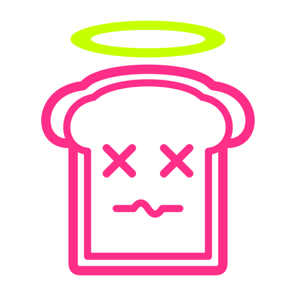
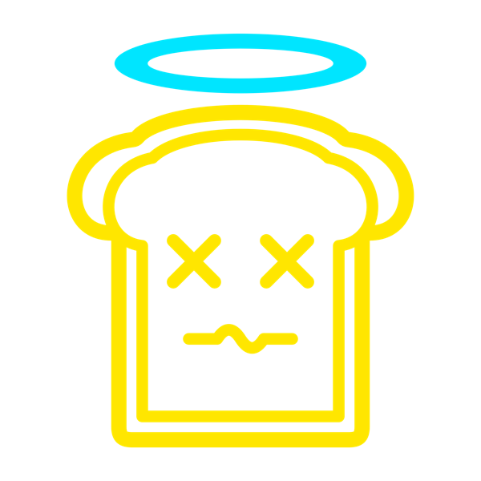
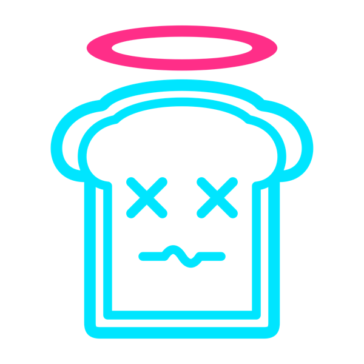

Coma Toast · Printful all-over print
A near-black all-over print tee. Saint sits large in the middle of the chest, inverted: the shirt fills the mark and the color is only the line work, like a neon sign. Chunky square paint blocks, chips and drips cover the front, back and sleeves, with a dark margin left around the logo so it stays the hero.
The front file uses Hot Wire. Each colorway also comes as a transparent outline PNG, so you can swap it in on Printful.



Every panel is oversized (24 in wide at 150 dpi) so Printful can crop it to the shirt without gaps at the seams. I couldn’t reach Printful’s template from here, so check each placement in their preview before ordering.
| File | Size | Use for |
|---|---|---|
front.jpg | 3600 × 4800 | Front, with the Hot Wire Saint already centered on the chest (about 8 in wide, 8.7 in tall, top of the halo about 5.8 in down). |
front-no-logo.jpg | 3600 × 4800 | Front without the logo but with its clear space, if you’d rather place a logo PNG as a layer. |
saint-hot-wire.png, -toxic.png, -riot.png | 3000 × 3000, transparent | The outline logo in each colorway. |
back.jpg | 3600 × 4800 | Back. |
sleeve-left.jpg, sleeve-right.jpg | 3600 × 2400 | Sleeves. |
front.jpg, back.jpg and the two sleeve files to their placements, each set to fill its area.front-no-logo.jpg and add a logo PNG as a layer, about 8 in wide, centered on the chest.